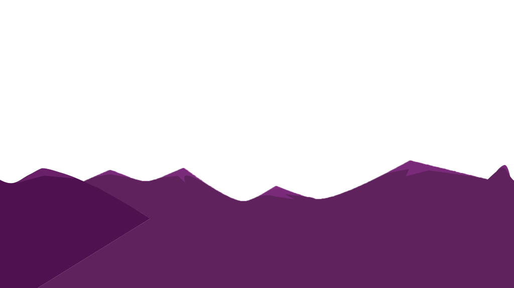
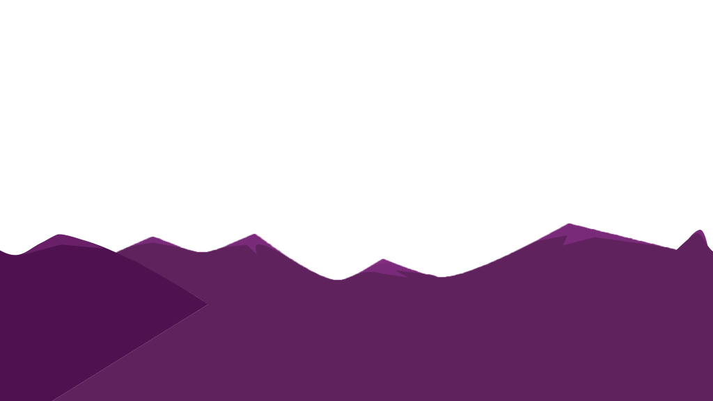

The Enigmatic Beauty of the Moon
The moon, Earth's constant companion, has captivated humanity for millennia with its ethereal glow and mysterious allure. As the brightest object in the night sky, it serves as a celestial beacon, guiding travelers and inspiring poets, artists, and scientists alike. With its mesmerizing phases and enigmatic surface, the moon has woven itself into the fabric of human culture, symbolizing everything from romance and mystery to cycles of renewal and transformation.The moon's serene presence has sparked countless myths and legends across cultures worldwide. Ancient civilizations revered it as a deity, attributing its cycles to divine forces governing the cosmos. From the serene goddess Luna of Roman mythology to the elusive Chang'e of Chinese folklore, the moon's influence transcends time and borders, weaving a tapestry of stories that reflect humanity's fascination with the celestial realm.
Yet, beyond its mythical allure, the moon remains a scientific marvel, beckoning exploration and discovery. Its surface, scarred by craters and maria, tells a tale of cosmic bombardment and geological evolution. From the Apollo missions to modern robotic explorers, humanity has ventured to the moon's barren landscape, unraveling its secrets and expanding our understanding of the universe.The moon's phases, from the waxing crescent to the waning gibbous, symbolize the eternal dance of light and darkness, growth and decay. Each phase carries its own symbolism, evoking emotions ranging from hope and anticipation to introspection and melancholy. The full moon, in particular, holds a special allure, casting a luminous glow upon the Earth and stirring the soul with its timeless beauty.Moreover, the moon plays a crucial role in shaping Earth's environment and sustaining life as we know it. Its gravitational pull creates the ocean tides, sculpting coastlines and influencing marine ecosystems. The moon's presence also stabilizes Earth's axial tilt, ensuring the planet's climatic stability over geological timescales.
In recent years, the moon has once again captured the imagination of humanity, as nations and private companies set their sights on lunar exploration and colonization. Ambitious missions aim to establish lunar outposts and pave the way for future manned missions to Mars and beyond. The moon, once a distant dream, is now within reach, beckoning humanity to venture forth and explore new frontiers in space.Yet, amid the fervor of space exploration, the moon remains a symbol of unity and wonder, reminding us of our shared humanity and interconnectedness with the cosmos. Whether gazing up at the night sky or contemplating its mysteries from afar, the moon continues to inspire awe and reverence, inviting us to ponder our place in the vast expanse of the universe. As we journey onward, let us carry the spirit of exploration and discovery, guided by the timeless wisdom of the moon and the stars.